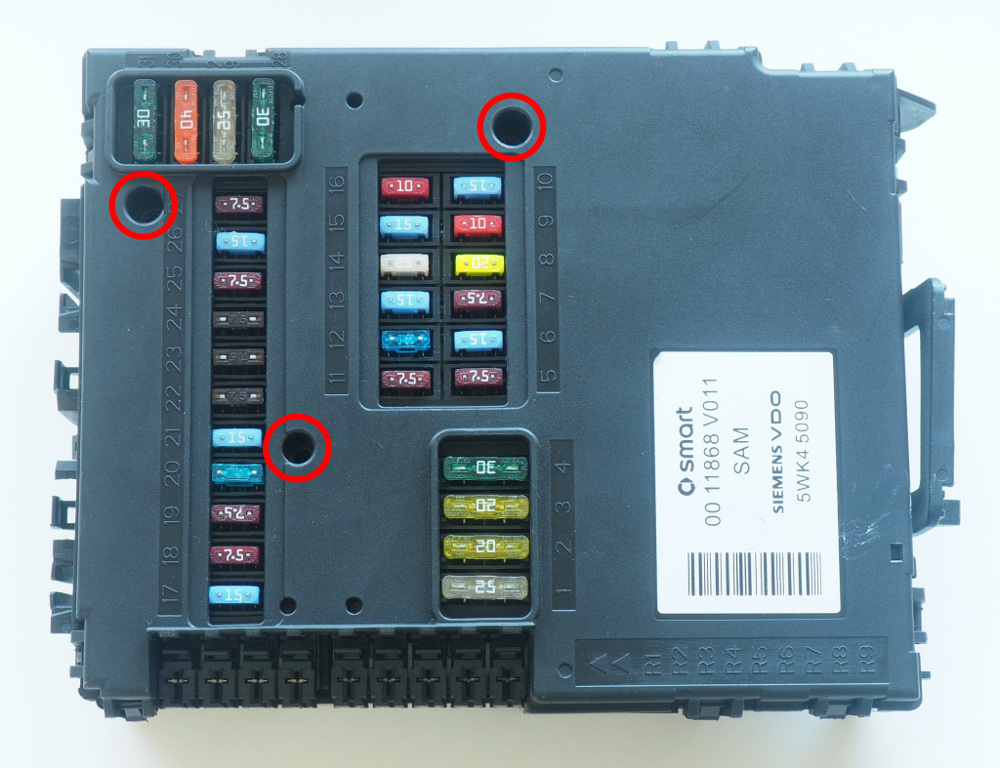
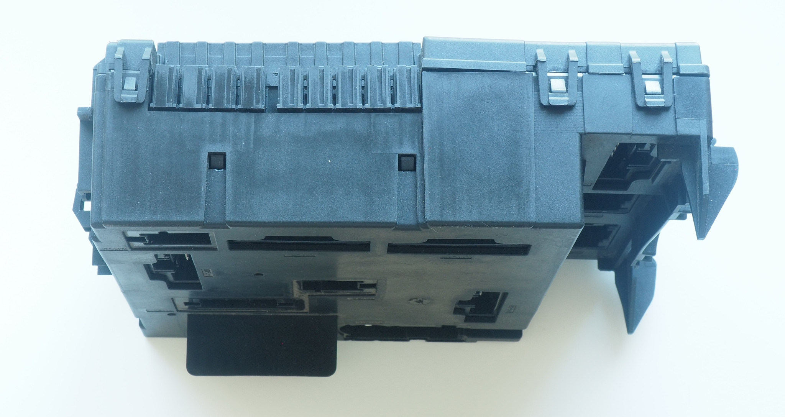
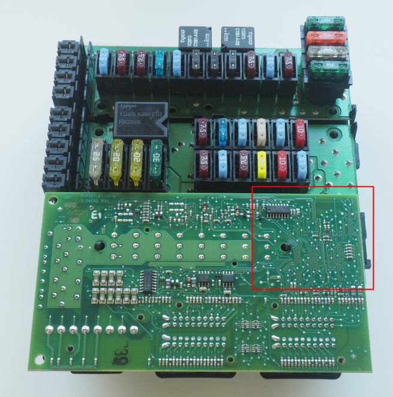
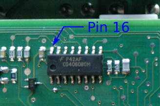
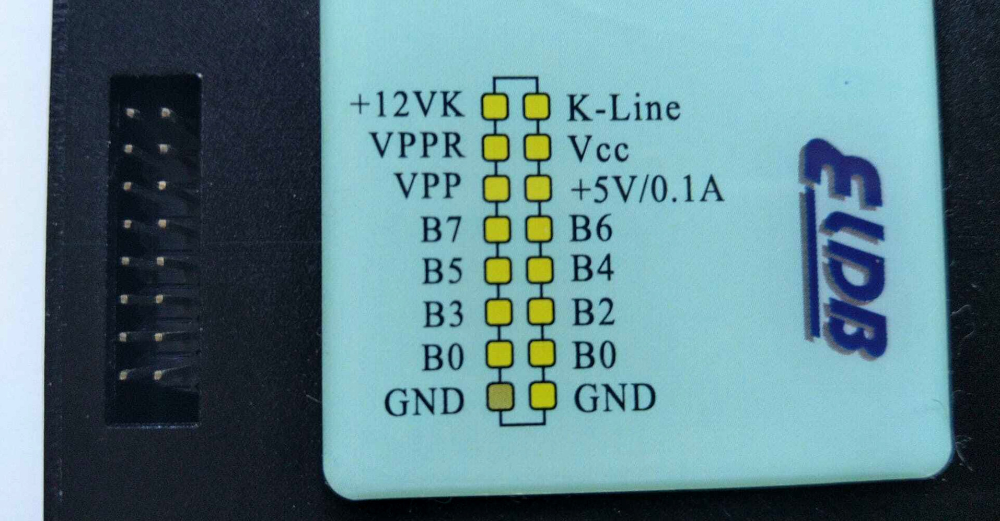
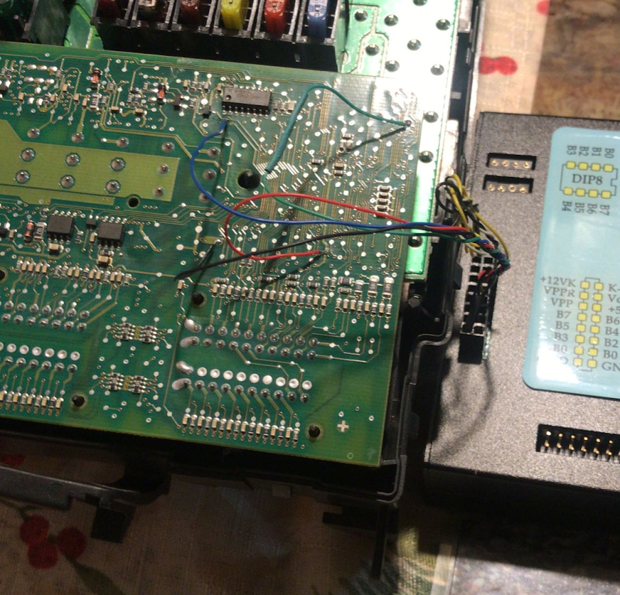

Virginización de la SAM
Contents
Virginización de la SAM#
Este procedimiento sirve para programar la EEPROM de la SAM con su contenido de fábrica de modo que se puede instalar en cualquier coche usando MB Star.
Preparación#
Retira los the 3 tornillos torx marcados:
{kind=link}
Abre la SAM.
{kind=link}
Vista superior de la placa:
{kind=link}
Desconecta el pin 16 (CD4060BCM)
{kind=link}
Cableado para la programación:

Conector del XProg:
{kind=link}
Configuración para la programación:
{kind=link}
Programación#
Abre XProg y selecciona el dispositivo (Device):
Type: ZGS 001
Subtype: A 164 540 56 62
MC9S12DT 256 -> EEPROM
{kind=link}
Crea un nuevo fichero (File->New) y lee el contenido actual de la EPROM (por si acaso dejarlo como estaba). El VIN del coche está situado a partir de la dirección 0x86E.
{kind=link}
Carga y escribe el fichero de fábrica en la EPROM.
Reconecta de nuevo el pin 16.
Retira los cables de programación.
La SAM está lista para instalar.
Instalación de la SAM en el coche#
Procedimiento MB Star procedure (Pendiente)
SAM, manual VIN, SAM menu, setting up